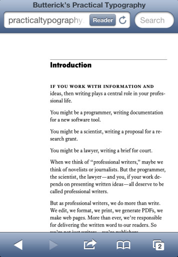

Welcome to AboutHalf
{kind=link}
{kind=link}
A while ago I followed a link on Daring Fireball to a great new typography resource, Butterick’s Practical Typography. Practical Typography is a web-based book on the basics of typography with, as the name suggests, an emphasis on practical everyday usage. The very first section of the book, “Typography in Ten Minutes”, is a short guide on improving your typography with 5 simple rules, followed immediately by a summary of key rules. These two pages taken together function like a checklist for good typography. The next time you produce a document, check it against the rules on these pages (and fix your mistakes), and you will have a far more professional result.
The book provides copious examples and instructions for how to achieve typographical effects in current versions of Microsoft Word for Windows and Mac, Pages for the Mac, and HTML / CSS. The web-book is relatively short; I read it over the course of a weekend on my iPad. The book is well organized into small, well cross referenced sections which stand alone without having read the surrounding chapters. Butterick’s Practical Typography is a great one-stop site for your typography skill improvement needs.
Web-based book
This book is partly an experiment in taking the web seriously as a book-publishing medium. I have a role to play in making the experiment work. And so do you.
The author, Matthew Butterick, is the author of the traditionally published book Typeography for Lawyers. Butterick’s Practical Typography covers similar ground, but is written for a more general audience of authors and writers. By publishing to the web first, Butterick has avoided the hassles of working with publishers (who expect to make money or something) and the diminishing reach of print. However, he faces the new challenge of trying to get people to pay for anything on the web.
In the section “How to pay for this book” he offers up a number of ways you can help support his work. The method he encourages the most is to buy one of his two fonts, Equity and Concourse, which are the fonts used in the design of the site itself. He also accepts PayPal and Amazon payments. I chose to send a little money via an Amazon payment, since I’m not in the market for a new font right now.
Whenever Practical Typography recommends a font, his two fonts are right at the top of the list. This is perhaps to be expected, he is trying to make money from his work, but I ran across a few folks who felt like this was a bit crass.
This is a tough line to straddle. It’s hard to make money on the web, where the default expectation is that all things should be free forever. Most web sites and web authors try to make money either by selling silly swag (like t-shirts) or with advertising. Most web advertising is terrible. The Practical Typography site shuns terrible web ads in lieu of selling a useful thing – professionally made fonts – for a reasonable price. You can certainly find free fonts these days, and there are paid fonts which are cheaper. However you won’t find a professionally made font with as many variations and styles for much cheaper. His fonts are a good value.
On the whole though, I encourage this sort of thing. Promoting this otherwise free web book through the sale of usable things like fonts is something I’d like to see more web sites and web authors doing.
Rules
Practical Typography is opinionated. The section “Font recommendations” is almost entirely a list of alternatives to typefaces you have installed on your computer. The author does not approve of Times New Roman…
If you have a choice about using Times New Roman, please stop. Use something else.
The section “Bad fonts” is sub-titled “Just don’t” (and ridicules one of my favorites, Bodoni. Sigh). The section “Typewriter habits” is a long list of things you’re probably doing wrong and links to a long, rather funny screed about putting only one space after a period (something I also find detestable).
Practical Typography is unapologetically authoritative in its subject and love it. Matters of taste, aesthetics, and design are so often assumed to be matters of gut or instinct. Quality comes from discipline and discipline requires rules. I respect that Practical Typography is unafraid to lay down the law, even if he’s wrong about Bodoni[1].
Faulty Web
Practical Typograhy looks great on your laptop’s browser and works pretty well as an iPad friendly e-book (which happens to be in your browser instead of the Kindle app or iBooks). However, it pretty much fails on a smartphone.

This is a strange failure, given that the content — headings, asides, links, and long columns of content — is a natural fit for the mobile web. Stranger still, responsive design techniques are used to provide larger and smaller type sizes based upon the size of the browser window. Visit the site on a desktop or laptop browser and resize your browser window to about half the width of your screen and back to see this in action.
Why go to all the trouble to provide scalable fonts and not provide a phone-friendly layout? A clue to this lies at the bottom of the section on tables.
Web purists like to note that semantically, tables shouldn’t be used purely for layout purposes in web pages. “Use CSS floats,” they say. Unfortunately, CSS floats can’t do everything that tables can. A new CSS layout mode called flexbox is starting to be supported in browsers, and may finally bring table-quality control to CSS. But if you need compatibility with older browsers, a table might still be the best tool for the job.
Oh those “web purists” and their rules won’t keep Matt Butterick down. The statement above is just barely accurate and does a disservice to the author’s cause.
It’s true that flex-boxes are an up-and-coming standard for web layouts — though I imagine their intended use is for web application user interfaces and not for documents. It’s also true that CSS floats are one technique one can use to achieve table-less layouts in HTML, though it’s hardly the only technique. My “vertigrid” example supports vertical alignment, horizontal alignment, centering, and has nary a float in sight. The main point is that floats are one tool in an arsenal of CSS techniques which replace the table-based layout practices of yesteryear. The semantic arguments against improperly using HTML tables still stand, but the practical concern is that table-based layouts suck on mobile browsers, just like the layout of Practical Typography.
Table-based layouts on mobile web sites suffer from two problems. One is simple bulk. The most heavy-handed float-based grid system still uses far less markup than the equivalent table based layout. Less markup means faster load times in your slow mobile device. Second, table-based layouts are inflexible. CSS layouts can respond to their container, and if needed, can be completely rearranged for different screen sizes or devices. Tables simply cannot do this.
Practical Typography is intended, at least in part, for authors publishing to the web. So it’s unfortunate that the author’s outdated, backwards looking, bad advice about layout is included. Continuing to encourage tables for layout is partying like it’s 1999. “Compatibility with older browsers” is a silly excuse unless by “older browsers” you mean “Netscape” and your readers are surfing the web from their time machine.
A slightly more subtle problem with this sneer about “web purists” is that it appears in a book which is entirely about rules and the right way to follow them. If you are making an extended case that there is a correct way to do something, you undermine your credibility if you dismissively disregard the standards and practices of the practitioners you hope to instruct.
-
Bodoni is best for posters and big, bold, short headings. Use sparingly. Consult your doctor. ↩
Personally, I just divide by 10 multiply by 2 for the universal 20% tip. But this works too.
{kind=link}
{kind=link}
{kind=link}
{kind=link}